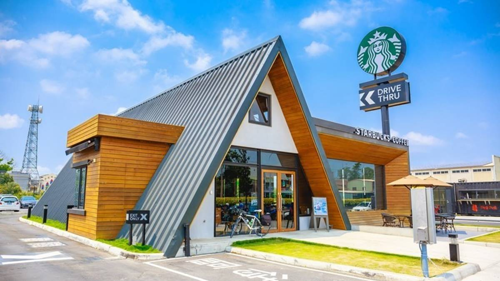
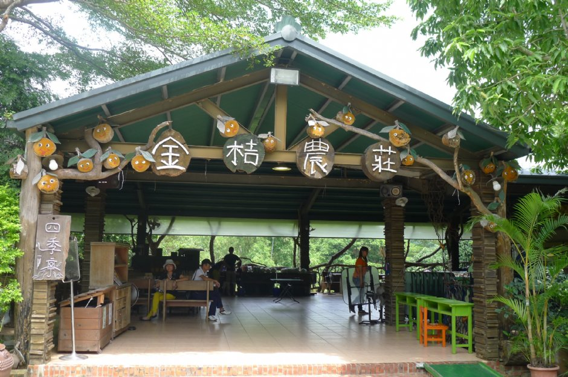
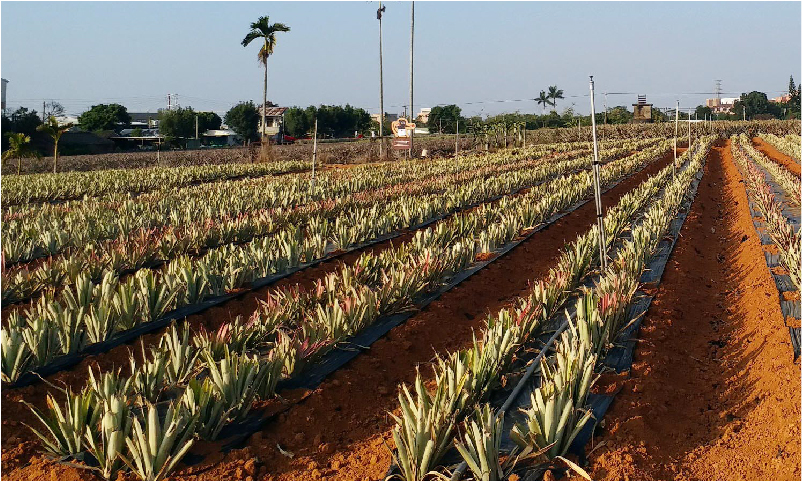

| 民雄星巴克 |民雄金桔觀光工廠| 旺來山 | |
| 民雄星巴克 | |
|  | 門市外觀以黑色沉穩色調與木材交錯，建築的三角型主體及長方型副體結構，呈現既現代又古典的教堂風格。一進入大門，尖型挑高屋頂迎接，在尖塔的左右兩側，以不同的深淺層次的長型柚木條排列，像是教堂中的雙排管風琴。
|
| 民雄金桔觀光工廠 | |
|  | 民雄鄉三興村陳厝寮7鄰38號（中正大學旁）。簡介 源自日治時期的金桔農園開啟民雄為金桔故鄉、貢獻地方經濟的開端，文化館大廳、DIY學堂、時光隧道等知性活動，還可深度體驗金桔從採收、清洗、刺孔、 醃漬、煮糖水等製作流程。
|
| 旺來山 | |
|  | 鳳梨育種的大本營位於在地的農業試驗所嘉義分所，
|